Wells are measured properly only during a production well test, roughly once a month, when the flow is routed through a test separator for 12–24 hours. For the other days nobody knows the rates. Every well does, however, stream per-minute sensor data: wellhead and downhole pressures, downhole temperature, annulus pressure and gas-lift injection rate. VFMonitor turns that stream into two things an engineer needs:
The workflow in the app is: upload raw files → data quality → daily rates → build-up interpretation → export. Every page is designed so that an engineer can see where a number comes from (inputs, formula, window, flags) and can override the one judgement call in the method, the radial-flow window.
| Requested | File(s) | Contents |
|---|---|---|
| Phase 1 result file | results/vfm_daily_predictions.csv / .xlsx | date, well_name, oil_rate_stbd, water_rate_stbd, gas_rate_mscfd; 2,730 rows (10 wells × 273 days) |
| Phase 2 result file | results/pta_results.csv / .xlsx | well_name, t_shut, duration_hr, m_psi_cycle, k_md, skin, dP_skin; 6 rows (one per shut-in) |
| Trained model | models/vfm_model.pkl | Per-well parameters, error quantiles for the 90% bands, reference tables (PVT, completion, well tests), validation and benchmark tables |
| Notebook, all cells run | notebooks/well_performance_workflow.ipynb | Data quality, VFM training and validation, model comparison, PTA for every shut-in, comparison with the reference answers, synthetic verification, export, saved-model path |
| PTA plots folder | results/pta_plots/ | For each shut-in: log-log diagnostic, Horner, semilog (MDH), shut-in history and a one-page summary (30 PNG files) |
| Full reports | results/vfm_report.xlsx, results/pta_report.xlsx | Everything behind the result files: 90% ranges, validation, model comparison, per-well parameters, PTA inputs, model-match cross-check, p* at gauge and datum, flags, written interpretation |
Python 3.10 or newer. From the repository root:
pip install -r requirements.txt → pip install -e . → streamlit run app/streamlit_app.py. The app opens at http://localhost:8501.
The app loads models/vfm_model.pkl and never retrains on its own. If the training data is present in data/raw the sidebar offers Training data (the full training view) and Upload; without it, the app opens directly in Upload mode. For the evaluation, choose Upload and drop the test files: the per-minute sensor table is required, everything else is optional.
| File | Granularity | Key columns | Used for |
|---|---|---|---|
high_freq_data.csv (required) | one row per well per minute | timestamp, well_name, whp_psia, whp_downstream_psia, dh_pressure_psia, dh_temperature_degf, annulus_pressure_psia, gas_lift_rate_mscfd | Daily features for the VFM (downhole pressure), shut-in detection (gas-lift rate), the build-up pressure record (downhole pressure) |
choke_events.csv | one row per choke change | timestamp, well_name, choke_opening_pct | Second shut-in signal (0 % = closed); choke size as a feature for the benchmark models |
well_tests.csv | one row per production test (85) | test_start, test_end, oil/water/gas rates, liquid, water cut, GOR, sensor averages, oil_gravity_api, gas_sg | Calibration targets for the VFM; scoring of uploaded tests; live-oil gradient for the datum correction |
reservoir_pvt.csv | one row per well | net_pay_thickness_ft, porosity_frac, total_compressibility_1_psi, wellbore_radius_ft, oil_fvf_rb_stb, oil_viscosity_cp, bubble_point_pressure_psia, datum_tvd_ft, estimated_drainage_area_acres | PTA formulas (h, φ, ct, rw, B, μ), drainage radius check, datum depth |
well_completion.csv | one row per well | gauge_tvd_ft, solution_gor_at_pb_scf_stb, choke_max_size_64ths, cum_oil_at_2025_01_01_stb | GOR prior for the VFM, cumulative oil for the Horner producing time, gauge depth for the datum correction |
Files are recognised by their columns, not their names, so they can be dropped in any order, as CSV, Excel (every sheet is read), Parquet or a zip of them. Column names are matched case-insensitively. Uploaded PVT or completion tables override the training values well by well.
Raw field data arrives with planted and natural faults. Everything below is applied automatically, logged, and shown on the Data page. The raw files are never modified.
| Step | Rule | Why | On the training data |
|---|---|---|---|
| Regular grid | Each well is put on a 1-minute grid from the first to the last day | Daily aggregation and build-up extraction need a known sampling | 3.9 million rows |
| Duplicates | Repeated timestamps are averaged | Both readings are usually valid | 2,513 duplicates |
| Missing-value code | Values ≤ −999 become missing (the LAS log convention −999.25) | They are not pressures | 541–1,191 minutes per well |
| Physical bounds | Pressures 14–5,000 psia (downhole to 15,000), temperature 32–400 °F, gas lift 0–10,000 Mscf/d | Impossible values are sensor faults | 2 minutes in total |
| Spikes | Hampel filter: a 31-minute centred window; a point more than 6 robust standard deviations (and more than 25 psi / 5 °F / 150 Mscf/d) from the window median is removed | Single-minute jumps are telemetry, not physics; the absolute floor avoids flagging quiet signals | 32–59 spikes per well |
| Frozen sensor | The same value for 60 minutes or more is removed (zero gas lift during a shut-in is allowed) | A stuck reading looks valid but is not | none found |
| Short gaps | Gaps up to 10 minutes are linearly interpolated; longer gaps stay empty | Filling a 36-hour gap would invent data | 675–938 minutes filled per well; 2,000–21,590 minutes left empty |
Each test reports oil, water, liquid, water cut, GOR, formation gas, lift gas and total gas. These are redundant (liquid = oil + water, total gas = formation + lift, water cut = water/liquid, formation gas = oil × GOR), so errors show up as inconsistencies and can be repaired from the other columns. On the training data: 5 sign flips made positive (water rate, formation gas, total gas, lift gas), and every GL-06 test had its gas reported in sm³/d (9 tests, converted to Mscf/d, factor 28.3168). Inconsistent totals are recomputed. Every correction is listed on the Data page and in the reports.
A gas-lifted well is shut in by stopping injection, so gas-lift rate below 5 Mscf/d is the primary signal; a choke opening of 0 % (when the choke log covers the period) is the second. Missing gas-lift readings inherit the previous state. Contiguous shut-in periods of at least one hour become events. Six were found in the training period (5.7 h to 72 h).
All ten wells flow with a bottom-hole pressure of 2,300–3,700 psia, far above their bubble points of about 1,200–1,600 psia. The oil is undersaturated: no free gas exists in the reservoir, only liquid flows there, and the inflow is linear in drawdown. Three consequences shape the model:
Inputs per day: the median downhole pressure over the flowing minutes of the day, and the fraction of the day the well was on stream (from the shut-in detection). Nothing else is needed: wellhead pressures and choke enter only as benchmark features.
Every daily value carries a 90 % prediction band: the 5th and 95th percentiles of the actual out-of-sample relative errors from the forward-chaining backtest (oil −6 % / +8.7 %, water −8 % / +11.8 %, gas ±15 %, from 55 blind tests). These are measured errors, not assumed distributions. The band is shown on every rate chart and exported in the VFM report.
The golden rule: never grade the model on a test it was trained on. Two schemes:
| Out-of-sample error (MAPE) | Oil | Water | Gas |
|---|---|---|---|
| Baseline: carry the last well test forward | 6.0 % | 5.9 % | 9.2 % |
| VFM, forward-chaining | 3.5 % | 4.8 % | 5.9 % |
| VFM, leave-one-test-out | 2.5 % | 3.6 % | 5.6 % |
Bias stays within ±1.2 % for every phase, so the errors are random, not systematic. Gas is the weakest because the measured GOR itself scatters by about 6 % from test to test and no sensor predicts that scatter (all correlations below 0.24): 5–6 % is near the floor for gas.
Every candidate was scored with the same forward-chaining backtest, on the same 55 tests:
| Model | Oil | Water | Gas | Comment |
|---|---|---|---|---|
| Physics IPR model (ours) | 3.5 % | 4.8 % | 5.9 % | knows the shape of inflow; extrapolates depletion |
| Last test carried forward | 6.0 % | 5.9 % | 9.2 % | what engineers do today |
| Per-well time trend | 6.0 % | 6.5 % | 7.1 % | ignores the sensors; misses pressure-driven swings |
| Gradient-boosted trees | 6.8 % | 12.9 % | 13.7 % | every sensor feature + well + time; too few examples, cannot extrapolate |
| Choke-flow ridge (pooled) | 7.2 % | 5.8 % | 10.6 % | Gilbert-type terms (choke size, WHP, downhole − WHP, gas lift, temperature) with per-well offsets |
With under ten tests per well, the model that already knows the physics needs the least data; trees can only predict values they have seen, while reservoir pressure keeps declining into new territory. Every parameter of our model means something an engineer can check (J is productivity, the time trend is depletion, the water-cut slope is breakthrough).
| Well | Tests | J, STB/d/psi | Water cut at 1 Jan, % | WC trend, pts/day | GOR, scf/STB | Rs(pb) |
|---|---|---|---|---|---|---|
| GL-01 | 9 | 2.20 | 40.3 | +0.028 | 275 | 278 |
| GL-02 | 8 | 1.87 | 50.1 | +0.029 | 302 | 301 |
| GL-03 | 9 | 0.50 | 31.5 | +0.015 | 222 | 222 |
| GL-04 | 9 | 1.18 | 29.4 | +0.015 | 242 | 238 |
| GL-05 | 8 | 0.77 | 31.1 | +0.028 | 315 | 326 |
| GL-06 | 9 | 6.13 | 37.9 | +0.022 | 212 | 217 |
| GL-07 | 9 | 19.20 | 25.6 | +0.036 | 264 | 268 |
| GL-08 | 8 | 2.45 | 16.9 | +0.030 | 334 | 336 |
| GL-09 | 9 | 2.35 | 17.8 | +0.031 | 161 | 160 |
| GL-10 | 7 | 2.47 | 21.6 | +0.025 | 229 | 230 |
If new data come with new well tests, the sidebar offers Recalibrate the flow meter with these well tests. The uploaded tests are always scored first with the model as trained (honest, out of sample); only then is the model refitted on training plus uploaded tests before the daily rates are predicted. The sidebar says "flow meter recalibrated" when this is on.
When the well is shut in, the pressure at the gauge rises toward reservoir pressure. Early on, fluid is still entering the wellbore (wellbore storage) and the curve says nothing about the rock. Later the pressure front moves radially through the reservoir (infinite-acting radial flow, IARF) and the pressure rises by a fixed amount per tenfold increase in time: that amount is the Horner slope m, and it gives permeability. How far the early pressure sits above or below the radial-flow line tells how damaged the near-wellbore zone is: the skin. Later still, boundaries or pressure support distort the curve.
The window is the flattest stretch of the derivative (lowest mean |d log Δp′/d log Δt|, with a small preference for longer windows), at least half a log cycle long, scanned after the end of wellbore storage. Two safeguards decide where that scan may start, both standard well-test reasoning:
These rules change nothing on well-behaved records: on the six training-period shut-ins the windows, m, k and skin are identical with and without them. They matter for short shut-ins with large wellbore storage, where the original picker returned k 45–87 % too low without a flag; on a 144-case synthetic grid the mean k error falls from 19.8 % to 5.8 % and no error above 20 % goes out unflagged. PTA_LEGACY_WINDOW = True in config.py restores the original picker exactly.
Independently of the straight line, the full storage + skin, infinite-acting radial-flow model (Agarwal–Ramey solution in Laplace space, inverted with Stehfest's algorithm, the same engine behind commercial PTA software) is fitted to the whole build-up with three physical parameters: k, s and the storage coefficient C. Residuals include both the pressure rise and the log of the derivative, so level and shape both count. It is shown on the Build-up page as grey curves on the log-log plot and as a note with its own 80 % range on k (from the fit's Jacobian) and the misfit as a percentage of the pressure rise.
Every event carries a result and a list of flags, so a weak result is reported, not hidden: fit R² below 0.98; derivative-plateau m differing from Horner m by more than 15 %; radius of investigation beyond the drainage radius inside the window; window shorter than half a log cycle; shut-in shorter than 6 h; no flowing pressure before the shut-in (skin not computable); no VFM rate (k not computable); storage-dominated record (model match used); poorly separable k and skin; model match disagreeing with the Horner line.
The gauge sits above the producing zone; the datum is the reference depth of the reservoir. m, k, skin and Δpskin use pressure differences, so they do not depend on the depth. Only absolute pressures (p*, pwf) do. The live-oil gradient is estimated from data in the files: ρ = (62.4 γo + 0.0136 Rs γg)/Bo, gradient = ρ/144, with γo from the tests' API gravity, γg from their gas gravity, Rs and Bo from the PVT tables: 0.33–0.37 psi/ft on these wells. p* is reported at gauge and at datum; the Build-up page lets you override the gradient with a survey value.
The dataset contains a reference file (pta_results.csv, 17 events, 11 of them in Oct–Dec for which we have no pressure data). It was never used for fitting; the six events inside the training period are compared below.
| Event | Hours | m ours | m ref | k ours | k ref | k err | skin ours | skin ref | Δpskin ours | ref |
|---|---|---|---|---|---|---|---|---|---|---|
| GL-01, 15 Apr | 72 | 22.80 | 23.17 | 110.9 | 105.6 | +4.9 % | 5.98 | 5.79 | 118.6 | 116.6 |
| GL-02, 8 Mar | 5.7 | 53.06 | 53.69 | 58.6 | 55.8 | +5.1 % | −0.58 | −0.64 | −26.8 | −30.0 |
| GL-04, 3 Jun | 48 | 146.09 | 147.89 | 53.8 | 53.0 | +1.5 % | −1.28 | −1.35 | −163.0 | −174.2 |
| GL-06, 22 Jul | 8 | 15.25 | 15.16 | 293.9 | 292.2 | +0.6 % | 1.85 | 1.89 | 24.5 | 24.9 |
| GL-08, 19 Aug | 72 | 93.27 | 92.80 | 42.4 | 42.1 | +0.6 % | −1.64 | −1.61 | −133.3 | −130.2 |
| GL-10, 27 May | 9 | 27.79 | 28.47 | 193.9 | 178.0 | +9.0 % | 2.28 | 2.14 | 55.2 | 53.0 |
| Mean absolute | 1.2 % | 3.6 % | 0.09 | |||||||
The slope is within 1.2 %. The remaining k difference is the oil rate: every reasonable definition of the rate before closure (last full day, shut-in day, last 24/6/1 hours of pressure) gives the same value, 2.7 % above the rate the reference implies on average. That is ordinary VFM error at those dates (the VFM is unbiased over 55 blind tests), not a PTA choice; forcing it to match six numbers would be fitting the answer key.
Synthetic build-ups generated from the exact analytical solution with 0.3 psi gauge noise, run through the same automatic pipeline: permeability recovered within 2.3 % and skin within 0.15 across five cases (k 25–290 md, skin −1.6 to 6, 72 h shut-ins). This is an automated test (tests/test_pta_synthetic.py) and is shown on the Method page.
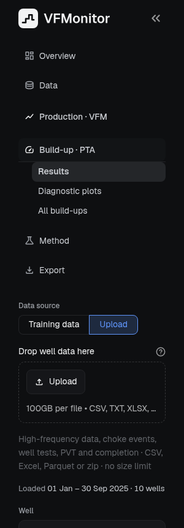
Sidebar: brand, navigation, data source, well selector and quick facts.
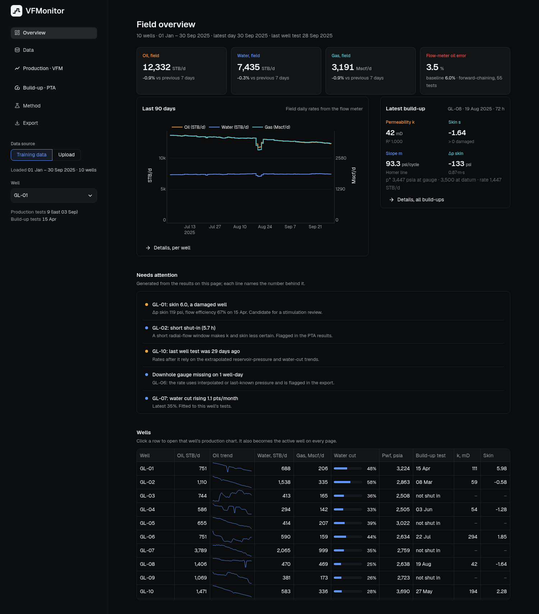
Overview: KPI row, last 90 days, latest build-up, needs attention, well table.
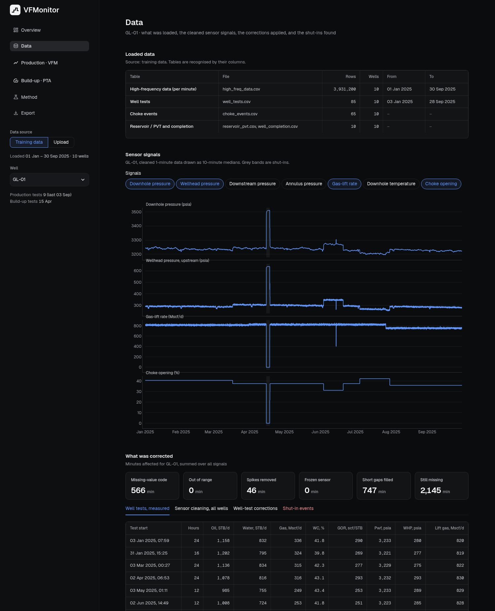
Data: what is loaded, cleaned signals with shut-ins shaded, minutes corrected, measured well tests, test corrections, shut-in list.
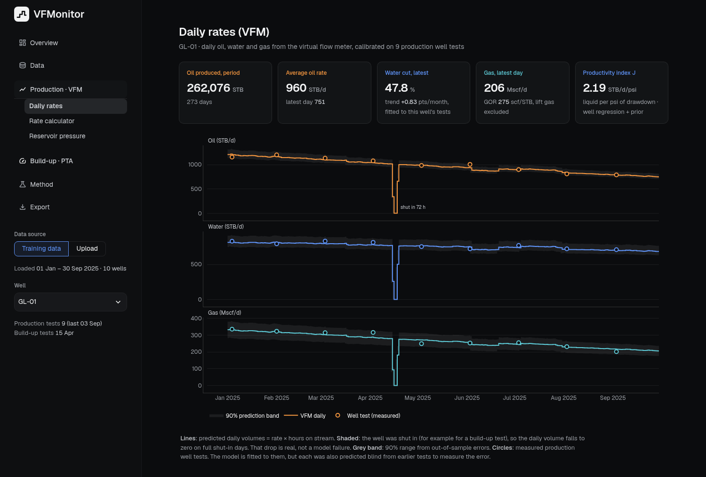
Daily rates: KPIs and the three-panel daily rates with bands, tests and shut-ins.
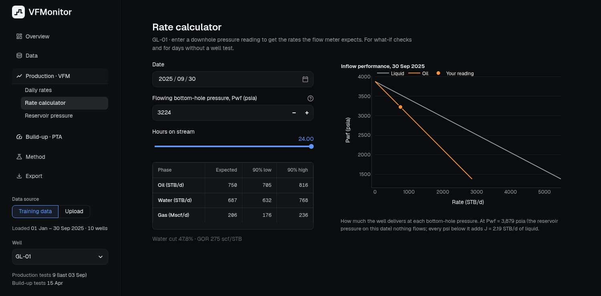
Rate calculator: date, bottom-hole pressure and hours on stream in; expected rates with their 90 % range and the inflow curve out.
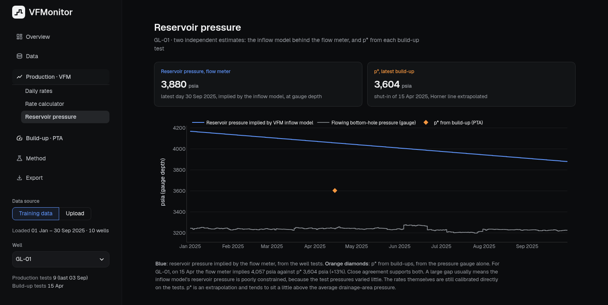
Reservoir pressure: the two independent estimates side by side.
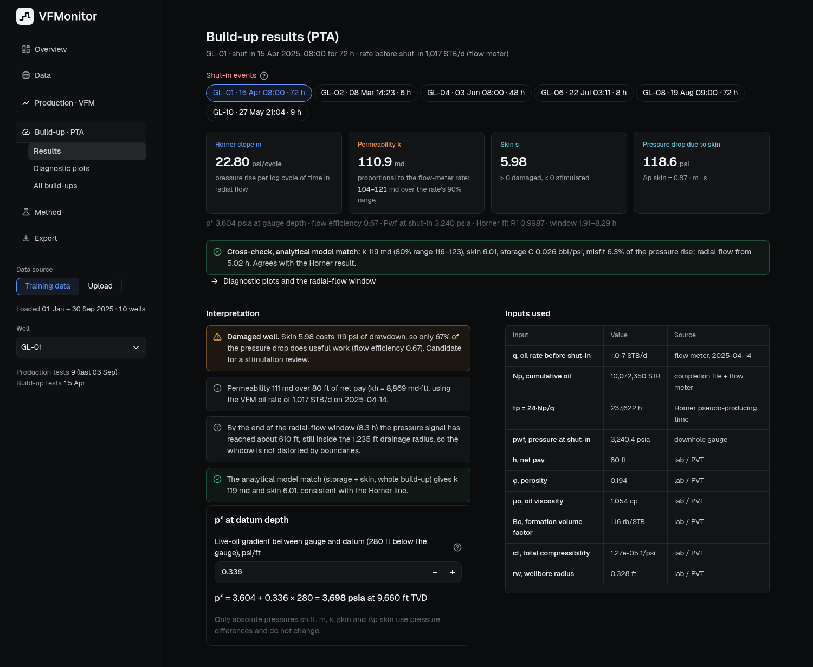
Results: event selector, the four results, model-match cross-check, interpretation, datum conversion and the inputs used.
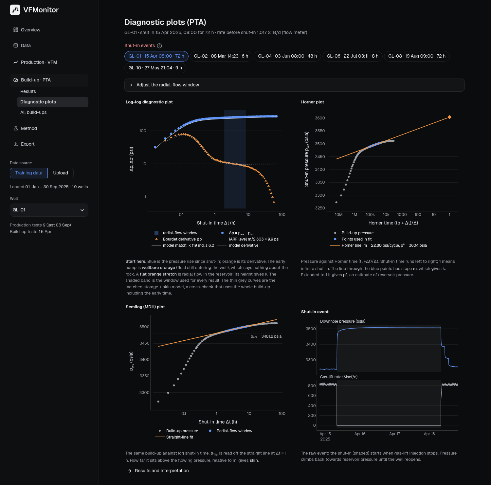
Diagnostic plots: the window control and the four plots, each with a short "how to read it" note.
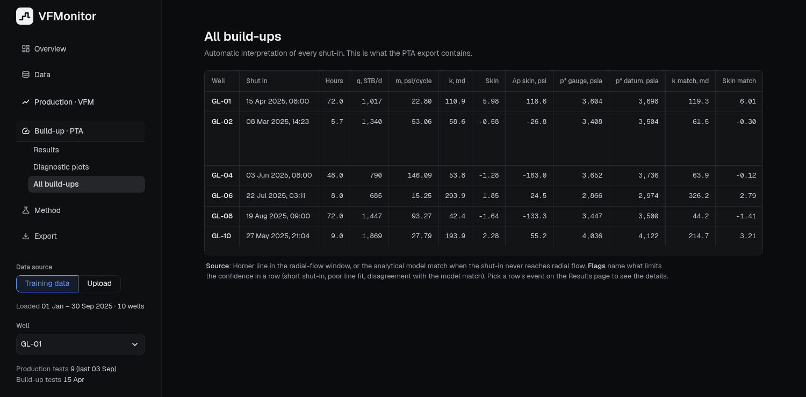
All build-ups: the full table, what the PTA export contains.
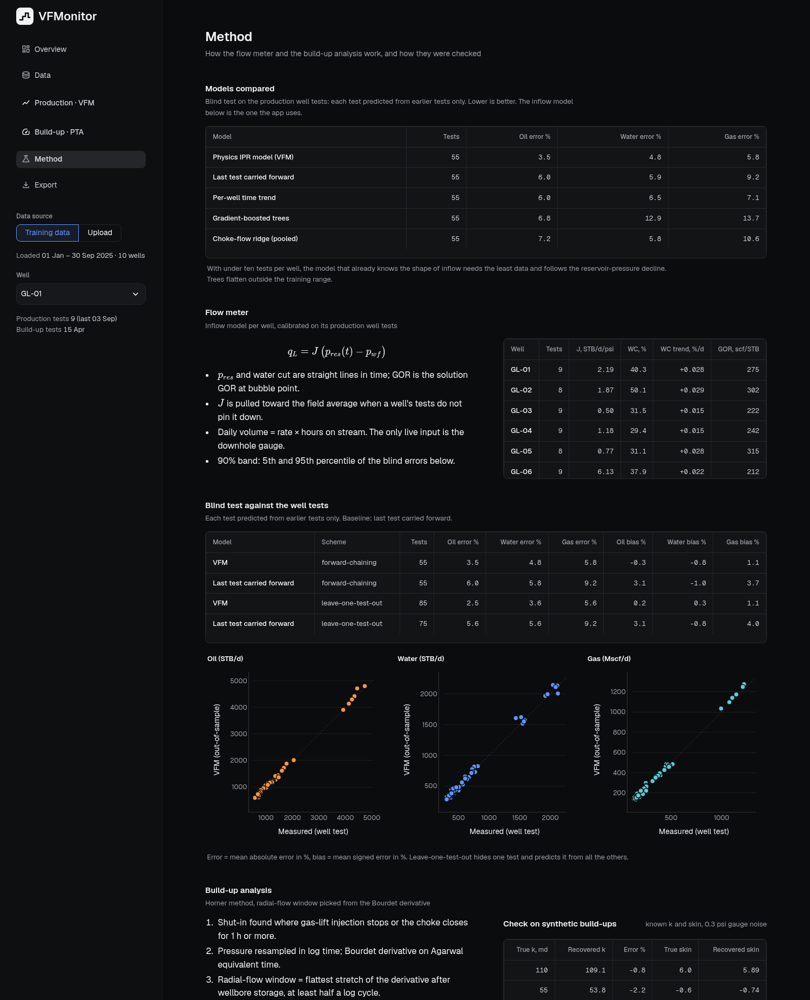
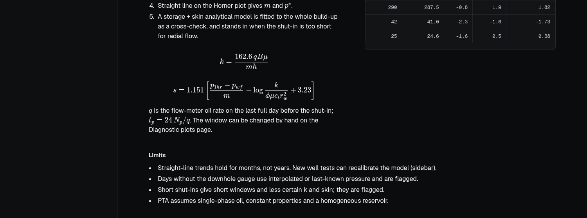
Method: the model comparison first, then one equation and four facts about the flow meter, per-well parameters, blind-test table, parity plots, the five PTA steps and formulas, synthetic check, limits.
The page to show the jury, kept short on purpose: the comparison of the models tried (blind test, lower is better), the inflow equation with four one-line facts (linear trends, the pooled prior on J, daily volume = rate × hours on stream, where the 90 % band comes from), the per-well parameters, the blind-test table for both schemes against the baseline, parity plots (measured test against blind prediction, points on the dotted line are perfect), the five PTA steps with the k and skin formulas, the synthetic check table and four limits. The longer explanations live in this guide and in the README. When tests were uploaded it adds the score of the unchanged model on them with its own parity plots.
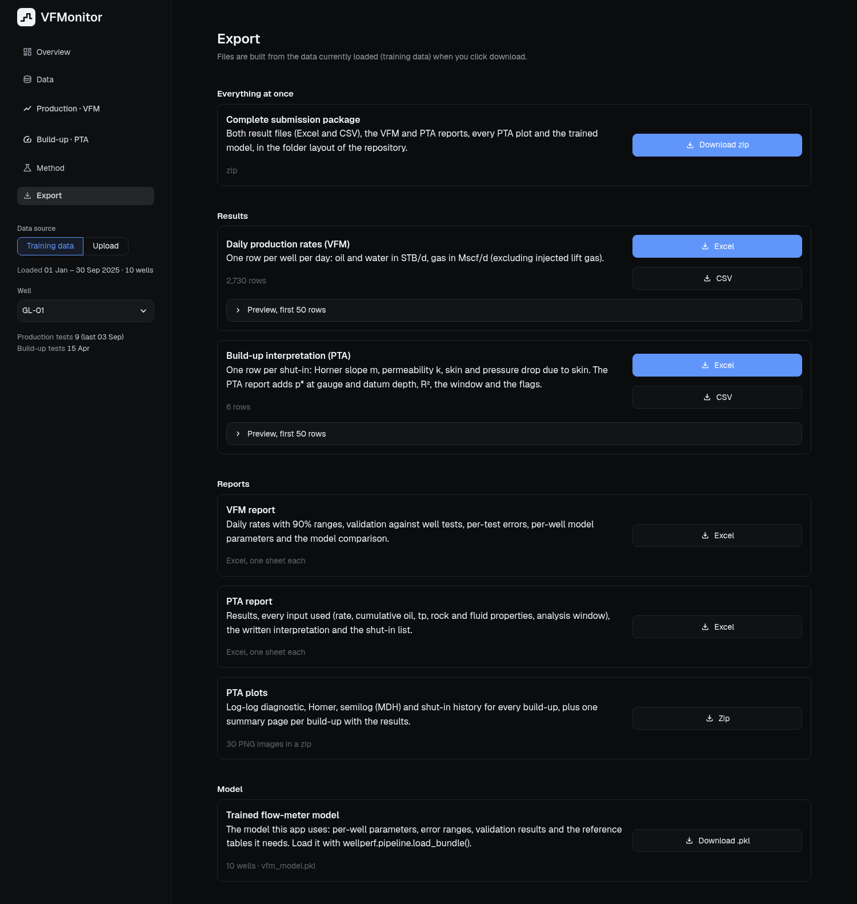
Export: one zip with everything, the two result files, both reports, the PTA plots, the model file.
Files are built from the data currently loaded when you click. Complete submission package zips both result files (Excel and CSV), both reports, every PTA plot and the model in the repository's folder layout. Then each piece separately, with a 50-row preview of the result files. Sheets of the reports are listed in section 8.
| Chart | Where | Axes and elements | What to look for |
|---|---|---|---|
| Field rates, last 90 days | Overview | x date; left y STB/d (oil amber, water blue), right y Mscf/d (gas cyan); step lines | Level and trend of the field; drops to zero are shut-ins |
| Oil trend sparkline | Overview table | Weekly mean oil per well | Decline or recovery per well at a glance |
| Sensor panels | Data | x time; one panel per signal, 10-minute medians, step lines; grey bands = shut-ins | Gaps, choke changes (steps in pressures), the build-ups, the cleanliness after filtering |
| Daily rates, three panels | Daily rates, Overview pop-up | x date; y STB/d or Mscf/d; step line = VFM, grey band = 90 % range, circles = tests, shading = shut-ins, label with hours shut | Tests inside the band; decline following the pressure trend; volume dips on shut-in days |
| Inflow performance (IPR) | Rate calculator | x rate STB/d, y pwf psia; grey liquid line, amber oil line, marker = your reading | Slope is 1/J; the intercept with zero rate is the reservoir pressure on that date |
| Reservoir pressure cross-check | Reservoir pressure | x date; y psia at gauge; blue = implied by VFM, grey = pwf, diamonds = p* from build-ups | Two independent routes to the same quantity should agree; both decline with depletion |
| Log-log diagnostic | Diagnostic plots | x Δt h (log), y psi (log); blue = Δp = pws − pwf; orange triangles = Bourdet derivative; dashed = IARF level m/2.303; shaded = window; grey curves = matched model and its derivative | Unit slope then hump = storage and skin; flat derivative = radial flow (its height gives k); late rise = closed boundary; late fall = pressure support |
| Horner plot | Diagnostic plots | x (tp+Δt)/Δt (log, reversed so time runs left to right; 1 = infinite shut-in); y pws; grey points = all data, blue = points in the window, orange line = Horner line, diamond = p* | Straight stretch through the blue points; its slope is m; extrapolated to 1 it gives p* |
| Semilog (MDH) | Diagnostic plots | x Δt h (log); y pws; same fit mapped onto Δt; dotted line = p1hr | p1hr is read at Δt = 1 h; its distance above pwf, relative to m, gives skin |
| Shut-in event | Diagnostic plots | x time ±12 h around the event; top = downhole pressure, bottom = gas-lift rate (step); shaded = shut-in | The closure is where injection stops; the build-up and the reopening are visible in raw form |
| Parity plots | Method | x measured test, y blind prediction, one per phase; dotted diagonal = perfect | Scatter around the diagonal without a tilt = accurate and unbiased |
| PTA summary page (PNG) | results/pta_plots | All four plots on one page with the results in the title | The printable version of the Diagnostic plots page for every event |
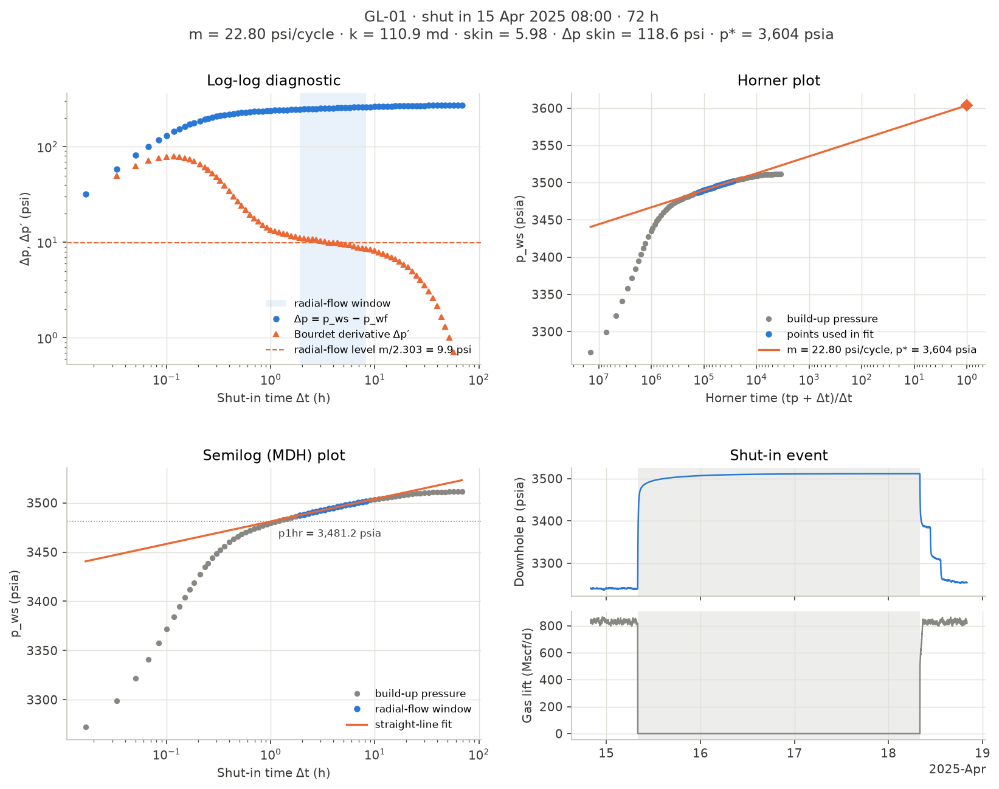
The exported summary page for GL-01 (15 April, 72 h): hump, descent, plateau at about 10 psi between 2 and 8 h, then the late-time decline; Horner line m = 22.8 psi/cycle; MDH with p1hr; the raw event.
| File | Sheets / columns |
|---|---|
| vfm_daily_predictions | date, well_name, oil_rate_stbd, water_rate_stbd, gas_rate_mscfd (2 decimals) |
| pta_results | well_name, t_shut, duration_hr, m_psi_cycle, k_md, skin, dP_skin |
| vfm_report.xlsx | Daily rates (90 % range): every daily value with p05/p95, liquid, water cut, implied reservoir pressure, pwf, on-stream fraction, flag · Validation forward · Validation leave-one-out · Backtest per test · Well parameters · Model comparison · (Uploaded tests, score and per test, when provided) |
| pta_report.xlsx | Results (deliverable columns) · Results (full): p*, p1hr, flow efficiency, window, source, R², radius of investigation, drainage radius, derivative m, k and skin from the model match with the k range, storage C, misfit, result source, p* at datum, gradient, flags · Inputs: q and its date, Np, tp, pwf, h, φ, μ, B, ct, rw, window · Interpretation (text) · Shut-in events |
| pta_plots.zip / folder | <well>_<date>_{summary, loglog, horner, mdh, history}.png |
| vfm_model.pkl | Python pickle: model (per-well parameters, GOR shrinkage, prior, error quantiles, metadata), static tables, well tests, test features, both backtests, training-period daily history, model comparison. Load with wellperf.pipeline.load_bundle(). |
| Claim | Evidence |
|---|---|
| The VFM beats the current practice | Forward-chaining on 55 blind tests: oil 3.5 % vs 6.0 % baseline; water 4.8 % vs 5.9 %; gas 5.9 % vs 9.2 %. Bias within ±1.2 %. |
| The VFM is the right model class | Same backtest, four alternatives, all worse (section 4). |
| The bands are honest | They are empirical quantiles of the blind errors; width stated per phase. |
| The PTA engine is correct | Analytical build-ups with known answers: k within 2.3 %, skin within 0.15. |
| The PTA results are right on the real data | Six reference events: m within 1.2 %, k within 3.6 %, skin within 0.09; the k residual is the rate. |
| The PTA is robust where records are poor | 144-case grid of short and storage-heavy shut-ins: mean k error 19.8 % → 5.8 %; no error above 20 % unflagged; nothing changed on the six real events. |
| The app works end to end | 13 automated tests: PTA verification and edge cases, upload readers (CSV, Excel, zip), saved model + new data path, every page for several wells, manual window, start without training data. |
We tried gradient-boosted trees and a pooled ridge regression on choke-flow terms under the same blind test: 6.8 % and 7.2 % oil error against 3.5 % for the physics model. With 7–9 tests per well, a flexible learner has too little to learn from and cannot extrapolate the depletion the model follows by construction. Every parameter of ours is interpretable.
No metric is ever computed on a test the model was fitted to. Forward-chaining predicts each test from earlier tests only; leave-one-out hides the test being predicted. The reference PTA answers were used only to check, never to fit, and the PTA rules were validated on synthetic cases with known answers.
The daily features are sensor medians over the day and the on-stream fraction; none of them is a measured rate. Well-test rates enter only as calibration targets. In the backtest, a test is predicted using tests that ended before it started.
Whole-day outages are bridged from neighbouring days and flagged; a well with no gauge at all in the upload uses its last known pressure and is flagged; the Overview lists the affected well-days. The gauge is a single point of dependence; a surface-only backup model is listed as future work.
Formation gas only, as the test file defines gas_rate_mscfd (oil × GOR). Lift gas is excluded; total gas = formation + lift is a separate column in the tests.
The brief specifies the VFM oil rate with a Horner analysis. We checked the rate history: in the ten days before each shut-in the rate moved by at most 2 % and no choke changed within 17 days, so full superposition would change m by far less than 1 %. The analytical model match is the second, independent method we do run.
Horner's pseudo-producing time. With tp ≫ Δt the plot is insensitive to it: m, k and skin change by ≤ 3 % even for a 30-day tp; only p* shifts by m log10(tp1/tp2).
Automatically: the flattest derivative stretch, at least half a log cycle, after storage has come down (section 5). Every number on the page recalculates live when the slider is moved, and the export states which window was used.
The app says so. The analytical storage+skin model is matched to the whole build-up and provides k and skin with an 80 % range and a flag; if only the storage hump is present, k and skin are not separable and the flag asks for a longer shut-in. No confident number is produced from a record that cannot support one.
Because the slope agrees within 1.2 % and the difference is the oil rate: ours is 2.7 % above the rate the reference implies at those dates, within the flow meter's validated error. We did not adjust the rate to match.
Both are reported for p*. k, skin, m and Δpskin use pressure differences and do not depend on depth. The gradient comes from the tests' oil and gas gravity and the PVT table (0.33–0.37 psi/ft) and can be overridden.
VFM bands: empirical quantiles of blind errors. k from Horner: the rate's band propagates linearly (shown in the help text). Model match: the fit's Jacobian. Nothing is an assumed confidence.
Seven explicit rules with stated thresholds (section 3), all logged and shown; well-test errors repaired from redundant columns, with the original and corrected values listed. On the training data: 2,513 duplicates, about 1,300 missing-value codes per column, 32–59 spikes per well, 5 sign flips and 9 unit errors.
Only the verification cases for the PTA engine (clearly labelled, generated from the analytical solution). All results come from the official data.
Yes: Upload mode with the shipped model. It handles new periods, missing optional files, different file formats, wells without a gauge, shut-ins that start on the first day of the data, and scores itself if tests are included.
Section 11: integration with the historian, recalibration governance, a surface-only fallback model, boundary and multi-layer PTA models, and a security review. Positioned as a proof of concept.
| Term | Meaning |
|---|---|
| STB/d, Mscf/d | Stock-tank barrels per day; thousand standard cubic feet per day |
| psia, psi/cycle | Absolute pressure; pressure change per tenfold increase in time (the Horner slope) |
| md | Millidarcy, permeability. Under 1 tight, 10–100 good, over 100 very good |
| pwf, pws, p*, p1hr | Flowing bottom-hole pressure; shut-in pressure; extrapolated (Horner) pressure; shut-in pressure read on the straight line at Δt = 1 h |
| J | Productivity index, STB/d of liquid per psi of drawdown |
| WC, GOR, Rs | Water cut (fraction of liquid that is water); gas–oil ratio scf/STB; solution GOR |
| Bo, μ, φ, ct, h, rw | Formation volume factor rb/STB; viscosity cp; porosity; total compressibility 1/psi; net pay ft; wellbore radius ft |
| Skin s, Δpskin, flow efficiency | Near-wellbore damage (+) or stimulation (−); the pressure loss it causes; share of the drawdown doing useful work |
| Wellbore storage C | bbl/psi; the wellbore's capacity to keep flowing fluid in after closure, which masks the reservoir at early time |
| IARF, Bourdet derivative | Infinite-acting radial flow; dΔp/d ln t, the diagnostic that makes flow regimes visible |
| MAPE, bias | Mean absolute percentage error; mean signed percentage error |
| Forward-chaining, leave-one-test-out | Validation schemes: predict from the past only; hide one test at a time |
Code map: src/wellperf/ data (cleaning), features (shut-ins, daily features), vfm (model, backtests), candidates (benchmarks), pta (derivative, window, Horner, model match), analytical (Laplace/Stehfest solution), interpret (plain-language rules), plots and static_plots (charts), pipeline (workflow, uploads, exports, model file), ui (page helpers); app/ the Streamlit pages; scripts/ training and notebook build; tests/ automated checks.